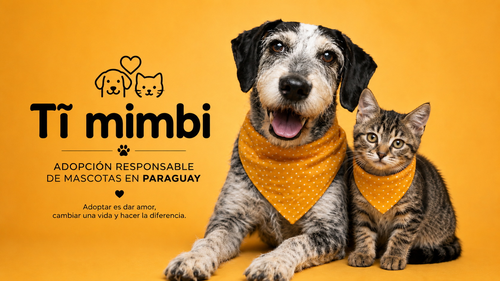

¿Quienes somos?
En Tĩ Mimbi, una organización social aquí en Paraguay, nos dedicamos a rescatar a esos perritos y gatitos que se han quedado sin hogar. Les damos todo el cariño y la atención que necesitan para que se recuperen física y emocionalmente, y así encontrarles un hogar lleno de amor y donde los cuiden bien. Creemos firmemente que cada nariz, por más chiquita que sea, merece volver a brillar de felicidad.

“¡No compres, adoptá!. Cambiá una vida y la tuya también brillará”✨
¿Qué hacemos?
Trabajamos todos los días para que cada nariz perdida vuelva a brillar. Estas son nuestras principales acciones:
- Rescatamos y buscamos hogares responsables.
- Alberguamos perritos, gatos y otros animales en situación de calle.
- Gestionamos adopciones de animales vacunados, desparasitados y castrados.
- Organizamos de ferias de adopción los fines de semana en distintos puntos de Paraguay.
- Brindamos rehabilitación física y emocional a cada animal rescatado.
Nuestro impacto hasta hoy
Rescatados
Adoptados
Voluntarios activos
¿Querés ayudar?
Podés adoptar, ser voluntario o realizar una donación. Tu granito de arena hace la diferencia.
Ver mascotas en adopción Quiero colaborarContacto
Dejanos tu correo y te enviaremos información sobre jornadas de adopción y voluntariado.